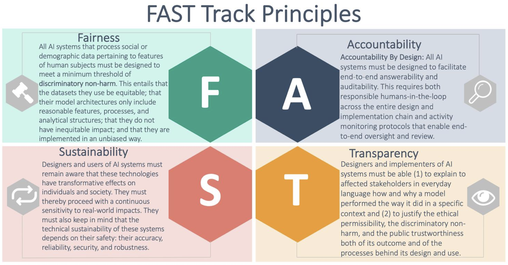
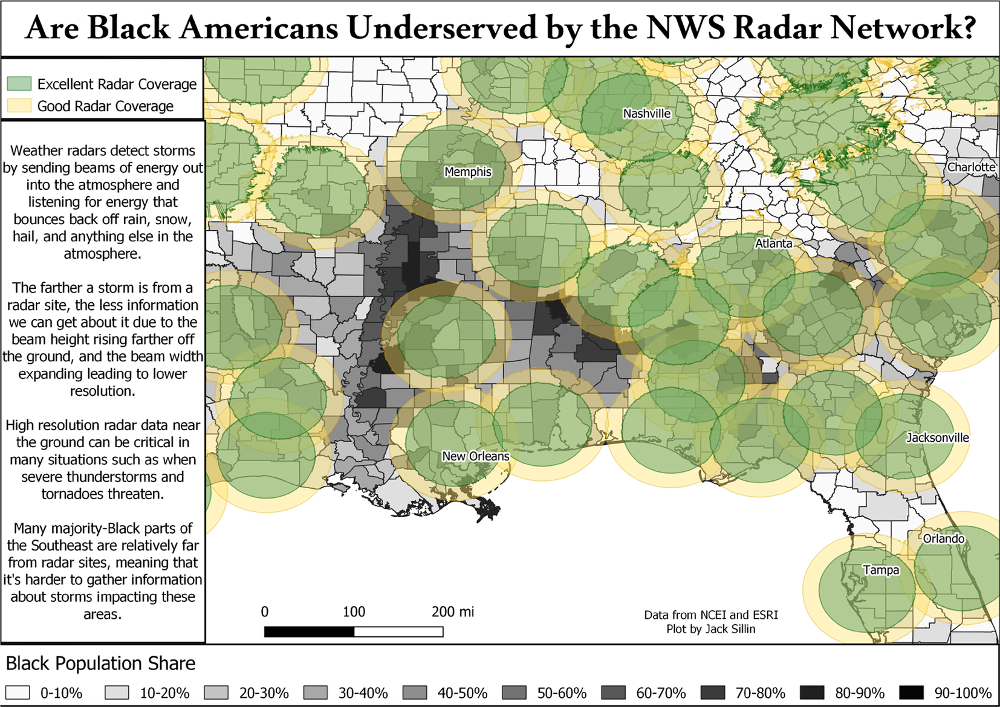

10 AI Ethics
>>>>THIS SECTION IS UNDER DEVELOPMENT<<<<
Goal
Review FAIR and CARE Principles, and their relevance to data ethics. Examine how ethical considerations are shared and considered at the Arctic Data Center. Discuss ethical considerations in machine learning.
10.1 Introduction
Artificial Intelligence (AI) can be thought of as the development of computer systems that can perform tasks we usually think require human intelligence, such as image recognition, language translation, or autonomous movement. The rapid development and adoption of AI tools in the past years, particularly machine learning algorithms, has revolutionized how big datasets are analyzed, transforming decision-making in all sectors of society. However, frameworks to examine the ethical considerations of AI are just emerging, and careful consideration of how to best develop and apply AI systems is essential to the responsible use of these new, rapidly changing tools. In this section, we will give an overview of the FAST Principles put forward by the Alan Turing Institute in their guide for the responsible design and implementation of AI systems (Leslie, 2019).
10.1.1 The FAST Principles
FAST stands for Fairness, Accountability, Sustainability, and Transparency. The FAST principles aim to guide the ethical development of AI projects from their inception to deployment. The continuous involvement and commitment of software developers, domain experts, technical leads, project managers, rightsholders, and collaborators involved in the AI project is crucial to implement these principles successfully. The following is a brief overview of each of the FAST principles, we greatly encourage you to read through the Alan Turing Institute guide to learn more!

10.1.2 Fairness
Bias can enter at any point of a research project, from data collection and preprocessing, to model design and implementation. This is because AI projects, as any other, are created by human beings who (even with the best of intentions) can introduce error, prejudice, or misjudgement into a system. Fairness refers to the active minimization of bias and commitment to not harm others through the outcomes of an AI system. The FAST principles (Leslie, 2019) suggest the following baseline for fairness:
The designers and users of AI systems ensure that the decisions and behaviours of their models do not generate discriminatory or inequitable impacts on affected individuals and communities. This entails that these designers and users ensure that the AI systems they are developing and deploying:
- Are trained and tested on properly representative, relevant, accurate, and generalisable datasets (Data Fairness)
- Have model architectures that do not include target variables, features, processes, or analytical structures (correlations, interactions, and inferences) which are unreasonable, morally objectionable, or unjustifiable (Design Fairness)
- Do not have discriminatory or inequitable impacts on the lives of the people they affect (Outcome Fairness)
- Are deployed by users sufficiently trained to implement them responsibly and without bias (Implementation Fairness)
The following figure (McGovern et al., 2022) shows coverage of the national Doppler weather network (green and yellow circles) over a demographic map of the Black population in the southeast US. This would be an example of an issue in data fairness, since radar coverage does not represent the population uniformly, leaving out areas with higher Black population. Problems with outcome fairness could ensue if this non-representative biases an AI model to under-predict weather impacts in such populations.

10.1.3 Accountability
Accountability in AI projects stems from the shared view that isolated AI models used to automate decisions are not morally responsible in the same way as a decision-making human. As outputs from AI models are increasingly used to make decisions that affect the environment and human lives, there is a critical need for competent human authorities to offer explanations and justifications for the development process, outputs, and ensuing decisions made by AI systems. Such answerability assignments can be challenging, as AI implementations are often the product of big development teams where the responsibility to answer for a project’s outcome may not be delineated, creating an issue known as “the problem of many hands.” The FAST principles encourage the following accountability implementation:
Accountability by Design: All AI systems must be designed to facilitate end-to-end answerability and auditability. This requires both responsible humans-in-the-loop across the entire design and implementation chain as well as activity monitoring protocols that enable end-to-end oversight and review.
Accountability and the ability to audit AI methods can be crucial when model outputs support critical decision-making, such as in natural disasters. In 2021, a New York Times investigation (Fink, 2021) covered a private company’s premature release of outputs about neighborhoods most affected by potential earthquakes in Seattle. While the initial release erroneously did not show threats for non-residential areas, ensuing updated versions showed non-compatible predictions again. Although the company acknowledged that its AI models would not replace the first responder’s judgment, the lack of audibility and opacity in the model development hindered accountability for any party, ultimately eroding the public confidence in the tools and leading to a loss of public resources.

10.1.4 Sustainability
Sustainability in the FAST principles includes continuous assessment of the social impacts of an AI system and technical sustainability of the AI model. In the first consideration, the FAST principles advocate for performing a Stakeholder Impact Assessment (SIA) at different stages to help build confidence in the project and uncover unexpected risks or biases, among other benefits. The Alan Turing Institute guide shares a prototype of an SIA (Leslie, 2019). The core of technical sustainability is creating safe, accurate, reliable, secure, and robust AI systems. To achieve these technical goals, teams must implement thorough testing, performance metrics, uncertainty quantification, and be aware of changes to the underlying distribution of data, among other essential practices.
The SpaceCows project (Shepherd, 2021; ABC Australia, 2024) in northern Australia is a collaboration between scientists, industry leaders, and local indigenous communities developing AI centered platforms to analyze GPS tracking data collected from feral cows alongside satellite imagery and weather data. Indigenous knowledge and traditional land owners have been at the center of the development, providing guidance and ultimately benefiting from the AI tools to protect their land and cultural sites.
Videos with more information on SpaceCows:
CSIRO rolls out world’s largest remote ‘space cows’ herd management system
10.1.5 Transparency
Under the FAST principles, transparency in AI projects refers to transparency about how an AI project was designed and implemented and the content and justification of the outcome produced by the AI model. To ensure process transparency, the project should show how the design and implementation included ethical, safety, and fairness considerations throughout the project. To clarify the content and explain the outcomes of an AI system, the project should offer plain language, non-technical explanations accessible to non-specialists that convey how and why a model performed the way it did. In this direction, it is essential to avoid a ‘mathematical glass box’ where the code and mathematics behind the algorithm are openly available, but there is a lack of rationale about how or why the model goes from input to output. Finally, the explanations about how the outcomes were produced should become the basis to justify the outcomes in terms of ethical permissibility, fairness, and trustworthiness. A careful consideration of the balance between the sustainability and transparency principles is necessary when dealing with protected or private data.
The concern for transparency in using personal data is an active space for debate. In 2018, the French government passed a law to protect citizens’ privacy, establishing the citizen’s “right to an explanation” regarding, among other things, how an algorithm contributed to decisions on their persona and which data was processed (Edwards and Veale, 2017; Lo Piano, 2020). Overall, this legislation aims to create a fairer and more transparent digital environment where everyone can enjoy equal opportunities.

10.1.6 Conclusion
As new AI developments and applications rapidly emerge and transform everyday life, we need to pause and ensure these technologies are fair, sustainable, and transparent. We must acknowledge human responsibility in designing and implementing AI systems to use these novel tools fairly and with accountability. Finally, we acknowledge that the information covered here is a lightning introduction to AI’s ethical considerations and implications. Whether you are a researcher interested in using AI for the first time or a seasoned ML practitioner, we urge you to dive into the necessary and ever-expanding AI ethics work to learn how to best incorporate these concepts into your work.
10.2 References
Edwards, Lilian, and Michael Veale. (2017). Enslaving the algorithm: From a right to an explanationn to a right to better decisionss?. SSRN Electronic Journal. https://doi.org/10.2139/ssrn.3052831.
Fink, Sheri. (2019). “This High-Tech Solution to Disaster Response May Be Too Good to Be True.” The New York Times. www.nytimes.com/2019/08/09/us/emergency-response-disaster-technology.html.
Leslie, D. (2019). Understanding artificial intelligence ethics and safety: A guide for the responsible design and implementation of AI systems in the public sector. The Alan Turing Institute. https://doi.org/10.5281/zenodo.3240529
Lo Piano, S. (2020). Ethical principles in machine learning and artificial intelligence: cases from the field and possible ways forward. Humanit Soc Sci Commun 7, 9. https://doi.org/10.1057/s41599-020-0501-9
McGovern, A., Ebert-Uphoff, I., Gagne, D. J., & Bostrom, A. (2022). Why we need to focus on developing ethical, responsible, and trustworthy artificial intelligence approaches for environmental science. Environmental Data Science, 1, e6. doi:10.1017/eds.2022.5
Shepard, Tory. (2021) Indigenous Rangers to Use SpaceCows Program to Protect Sacred Sites and Rock Art from Feral Herds.” The Guardian, Guardian News and Media. www.theguardian.com/australia-news/2021/sep/15/indigenous-rangers-to-use-spacecows-program-to-protect-sacred-sites-and-rock-art-from-feral-herds.
(2021). SpaceCows: Using AI to Tackle Feral Herds in the Top End. CSIRO. www.csiro.au/en/news/all/news/2021/september/spacecows-using-ai-to-tackle-feral-herds-in-the-top-end.
10.3 Further Reading
Academic Data Science Alliance (ADSA) (2024) The Data Sciene Ethos https://ethos.academicdatascience.org
Chen, W., & Quan-Haase, A. (2020) Big Data Ethics and Politics: Towards New Understandings. Social Science Computer Review. https://journals.sagepub.com/doi/10.1177/0894439318810734
Crawford, K., & Paglen, T. (2019) Excavating AI: The Politics of Training Sets for Machine Learning. https://excavating.ai/
Gray, J., & Witt, A. (2021) A feminist data ethics of care framework for machine learning: The what, why, who and how. First Monday, 26(12), Article number: 11833